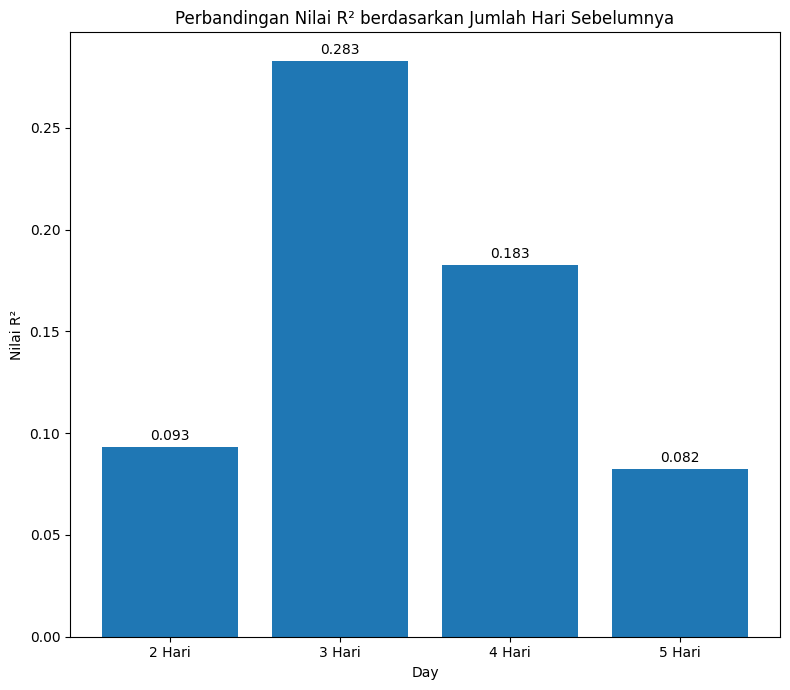
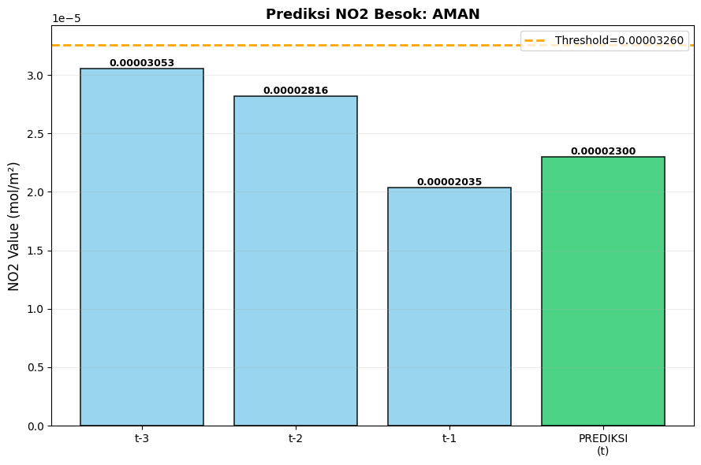

KNN Regression Data (NO₂ Medan)#
K-Nearest Neighbors (KNN) Regression merupakan salah satu metode machine learning berbasis jarak yang digunakan untuk melakukan prediksi nilai kontinu.
Prinsip utama KNN Regression adalah melakukan estimasi nilai target berdasarkan kedekatan data baru dengan beberapa data historis yang memiliki karakteristik serupa (nearest neighbors).
Pada saat proses prediksi, algoritma akan:
Menghitung jarak antara data baru dengan seluruh data historis (menggunakan metrik seperti Euclidean Distance).
Memilih K tetangga terdekat (nearest neighbors) berdasarkan jarak terkecil.
Mengambil rata-rata nilai target dari tetangga terdekat tersebut sebagai hasil prediksi.
Penerapan pada Prediksi NO₂ Kota Medan#
Dalam konteks kasus prediksi konsentrasi Nitrogen Dioksida (NO₂), nilai lag (misalnya NO₂ dua hingga lima hari sebelumnya) digunakan sebagai fitur masukan (features).
Fitur-fitur ini merepresentasikan kondisi historis dari konsentrasi NO₂.
KNN kemudian akan mencari periode masa lalu yang memiliki pola lag serupa, kemudian memprediksi kadar NO₂ untuk hari berikutnya berdasarkan rata-rata kadar NO₂ dari periode-periode yang mirip tersebut.
Pendekatan ini cocok untuk data deret waktu yang memiliki pola perubahan tidak terlalu tajam, karena KNN mengandalkan kesamaan pola data sebelumnya untuk memperkirakan nilai di masa depan.
Mengapa Nilai R² dan MSE Rendah pada Eksperimen?#
Nilai R-Squared (R²) yang rendah menunjukkan bahwa model belum mampu menjelaskan variasi kadar NO₂ dengan baik.
Hal ini wajar karena model hanya menggunakan data lag (2–5 hari sebelumnya) sebagai prediktor, tanpa memasukkan variabel lingkungan lain seperti:
Suhu udara
Kelembapan
Curah hujan
Arah dan kecepatan angin
Aktivitas lalu lintas atau industri
Faktor-faktor tersebut memiliki pengaruh besar terhadap fluktuasi kadar NO₂ di atmosfer.
Akibatnya, KNN hanya dapat “menebak” pola berdasarkan kemiripan historis dari satu variabel (NO₂), sehingga performa model menjadi terbatas.
Modeling Data NO₂ Medan#
Proses modeling dilakukan berdasarkan hasil eksperimen pada tahap konversi supervised learning dengan jumlah lag berbeda.
Tujuannya adalah membandingkan seberapa besar pengaruh jumlah lag features terhadap performa model KNN Regression.
Tahapan Modeling:#
Import Library
Mengimpor pustaka yang dibutuhkan sepertipandas,numpy,sklearn, danmatplotlib.
import numpy as np
import pandas as pd
import matplotlib.pyplot as plt
from sklearn.preprocessing import StandardScaler
from sklearn.datasets import make_regression
from sklearn.model_selection import train_test_split
from sklearn.neighbors import KNeighborsRegressor
from sklearn.metrics import r2_score, mean_squared_error
Membaca Dokumen
Membaca dataset hasil konversi supervised (lag 2–5 hari) yang telah disimpan dalam format CSV.
day1 = pd.read_csv('day2.csv')
day2 = pd.read_csv('day2.csv')
day3 = pd.read_csv('day3.csv')
day4 = pd.read_csv('day4.csv')
day5 = pd.read_csv('day5.csv')
Modeling Data (t1, t2)
Melatih model KNN menggunakan dua hari sebelumnya sebagai fitur input.
X = day2.drop(columns=['NO2'])
y = day2['NO2']
X_train, X_test, y_train, y_test = train_test_split(X, y, test_size=0.2, random_state=42)
scaler = StandardScaler()
X_train_scaled = scaler.fit_transform(X_train)
X_test_scaled = scaler.transform(X_test)
knn = KNeighborsRegressor(n_neighbors=5)
knn.fit(X_train_scaled, y_train)
day2_predict = knn.predict(X_test_scaled)
r2_day2 = r2_score(y_test, day2_predict)
mse_day2 = mean_squared_error(y_test, day2_predict)
print("MSE:", mse_day2)
print("R2:", r2_day2)
MSE: 1.0672477048516717e-10
R2: 0.0932364564130721
Modeling Data (t1, t2, t3)
Menambahkan satu hari historis tambahan untuk melihat perubahan performa model.
X = day3.drop(columns=['NO2'])
y = day3['NO2']
X_train, X_test, y_train, y_test = train_test_split(X, y, test_size=0.2, random_state=42)
scaler = StandardScaler()
X_train_scaled = scaler.fit_transform(X_train)
X_test_scaled = scaler.transform(X_test)
knn = KNeighborsRegressor(n_neighbors=5)
knn.fit(X_train_scaled, y_train)
day3_predict = knn.predict(X_test_scaled)
r2_day3 = r2_score(y_test, day3_predict)
mse_day3 = mean_squared_error(y_test, day3_predict)
print("MSE:", mse_day3)
print("R2:", r2_day3)
MSE: 7.96162697159147e-11
R2: 0.28273620446679304
Modeling Data (t1, t2, t3, t4)
Menggunakan empat hari sebelumnya sebagai masukan ke model.
X = day4.drop(columns=['NO2'])
y = day4['NO2']
X_train, X_test, y_train, y_test = train_test_split(X, y, test_size=0.2, random_state=42)
scaler = StandardScaler()
X_train_scaled = scaler.fit_transform(X_train)
X_test_scaled = scaler.transform(X_test)
knn = KNeighborsRegressor(n_neighbors=5)
knn.fit(X_train_scaled, y_train)
day4_predict = knn.predict(X_test_scaled)
r2_day4 = r2_score(y_test, day4_predict)
mse_day4 = mean_squared_error(y_test, day4_predict)
print("MSE:", mse_day4)
print("R2:", r2_day4)
MSE: 1.0527278824903889e-10
R2: 0.1825367645195265
Modeling Data (t1, t2, t3, t4, t5)
Menggunakan hingga lima hari sebelumnya sebagai variabel prediktor untuk memperkaya informasi temporal.
X = day5.drop(columns=['NO2'])
y = day5['NO2']
X_train, X_test, y_train, y_test = train_test_split(X, y, test_size=0.2, random_state=42)
scaler = StandardScaler()
X_train_scaled = scaler.fit_transform(X_train)
X_test_scaled = scaler.transform(X_test)
knn = KNeighborsRegressor(n_neighbors=5)
knn.fit(X_train_scaled, y_train)
day5_predict = knn.predict(X_test_scaled)
r2_day5 = r2_score(y_test, day5_predict)
mse_day5 = mean_squared_error(y_test, day5_predict)
print("MSE:", mse_day5)
print("R2:", r2_day5)
MSE: 1.180756907884637e-10
R2: 0.08227278064315191
Perbandingan Performa Model
x = ['2 Hari', '3 Hari', '4 Hari', '5 Hari']
y = [r2_day2, r2_day3, r2_day4, r2_day5]
fig, ax = plt.subplots(figsize=(8, 7))
bars = ax.bar(x, y)
ax.set_title("Perbandingan Nilai R² berdasarkan Jumlah Hari Sebelumnya")
ax.set_xlabel("Day")
ax.set_ylabel("Nilai R²")
ax.bar_label(bars, fmt='%.3f', padding=3)
plt.tight_layout()
plt.show()

Setelah seluruh model dilatih, dilakukan perbandingan menggunakan dua metrik utama:
R² (Coefficient of Determination) — mengukur seberapa besar variasi data target yang dapat dijelaskan oleh model.
MSE (Mean Squared Error) — mengukur rata-rata kesalahan kuadrat antara nilai prediksi dan nilai aktual.
Hasil perbandingan ini menunjukkan tren bahwa penambahan jumlah lag tidak selalu meningkatkan akurasi secara signifikan, karena karakteristik data NO₂ cenderung dipengaruhi oleh faktor eksternal yang tidak tercakup dalam fitur historis saja.
Prediksi Nilai NO2 Satu Hari Ke Depan#
# KODE: Prediksi NO2 H+1 (ringkasan pipeline + output langsung, tanpa menyimpan file)
# - Menggunakan 3 lag: NO2(t-3), NO2(t-2), NO2(t-1)
# - Melatih final KNN (k=5), normalisasi StandardScaler
# - Menerapkan threshold (75th percentile) -> klasifikasi AMAN / BERBAHAYA
# - Menampilkan ringkasan pipeline, metrik, dan plot (tidak menyimpan file)
import numpy as np
import pandas as pd
import matplotlib.pyplot as plt
from sklearn.preprocessing import StandardScaler
from sklearn.model_selection import train_test_split
from sklearn.neighbors import KNeighborsRegressor
from sklearn.metrics import r2_score, mean_squared_error, mean_absolute_error
from sklearn.metrics import accuracy_score, precision_score, recall_score, f1_score
from datetime import timedelta
# ---------------------------
# 1) Baca timeseries bersih (coba beberapa path umum)
# ---------------------------
paths_to_try = [
'timeseries_cleaned.csv',
'./timeseries_cleaned.csv',
'../data/data-copernicus/timeseries_cleaned.csv',
'../timeseries_cleaned.csv'
]
ts = None
for p in paths_to_try:
try:
ts = pd.read_csv(p)
print(f"Loaded timeseries from: {p}")
break
except Exception:
pass
if ts is None:
raise FileNotFoundError("File timeseries_cleaned.csv tidak ditemukan di path umum. Silakan letakkan file di working directory atau update path.")
# pastikan kolom date & NO2 ada
if 'date' in ts.columns:
try:
ts['date'] = pd.to_datetime(ts['date'])
except Exception:
pass
if 'NO2' not in ts.columns:
raise KeyError("Kolom 'NO2' tidak ditemukan pada timeseries_cleaned.csv")
ts = ts.sort_values('date').reset_index(drop=True)
# ---------------------------
# 2) Buat supervised_df dengan 3 lag: t1= yesterday, t2=2 days ago, t3=3 days ago
# dan target NO2(t) (hari sekarang)
# ---------------------------
supervised_df = ts[['date', 'NO2']].copy()
n_lags = 3 # sesuai permintaan (t-3, t-2, t-1)
for i in range(1, n_lags + 1):
supervised_df[f'NO2(t-{i})'] = supervised_df['NO2'].shift(i)
# target tetap kolom 'NO2' (hari t)
supervised_df = supervised_df.dropna().reset_index(drop=True)
# rename target for clarity (optional)
supervised_df = supervised_df.rename(columns={'NO2': 'NO2(t)'})
# ---------------------------
# 3) Siapkan X, y ; split train/test ; scaling ; latih model KNN (k=5)
# ---------------------------
feature_cols = [f'NO2(t-{i})' for i in range(3, 0, -1)] # ['NO2(t-3)','NO2(t-2)','NO2(t-1)']
X = supervised_df[feature_cols].values
y = supervised_df['NO2(t)'].values
# split
X_train, X_test, y_train, y_test = train_test_split(X, y, test_size=0.2, random_state=42, shuffle=False)
# scaling (fit pada training)
scaler = StandardScaler()
X_train_s = scaler.fit_transform(X_train)
X_test_s = scaler.transform(X_test)
# final model
best_k = 5
final_model = KNeighborsRegressor(n_neighbors=best_k)
final_model.fit(X_train_s, y_train)
# prediksi pada test set untuk evaluasi
y_pred_test = final_model.predict(X_test_s)
# hitung metrik regresi
mse = mean_squared_error(y_test, y_pred_test)
rmse = np.sqrt(mse)
mae = mean_absolute_error(y_test, y_pred_test)
r2 = r2_score(y_test, y_pred_test)
# ---------------------------
# 4) Threshold definition (75th percentile dari data training target)
# ---------------------------
threshold = np.percentile(y_train, 75)
# buat label biner pada test set (untuk evaluasi classification metrics)
y_test_bin = (y_test > threshold).astype(int)
y_pred_bin = (y_pred_test > threshold).astype(int)
accuracy = accuracy_score(y_test_bin, y_pred_bin)
precision = precision_score(y_test_bin, y_pred_bin, zero_division=0)
recall = recall_score(y_test_bin, y_pred_bin, zero_division=0)
f1 = f1_score(y_test_bin, y_pred_bin, zero_division=0)
# ---------------------------
# 5) Siapkan input H+1: ambil 3 hari terakhir dari supervised_df (original)
# ---------------------------
last_3_days_original = supervised_df[feature_cols].iloc[-1].values # urut: t-3, t-2, t-1
# tampilkan nilai original 3 hari terakhir
print("\nData 3 hari terakhir (Original):")
for idx, col in enumerate(feature_cols):
print(f" - {col}: {last_3_days_original[idx]:.8f} mol/m²")
# normalisasi
last_3_days_scaled = scaler.transform([last_3_days_original])[0]
print("\nData 3 hari terakhir (Normalized):")
for idx, col in enumerate(feature_cols):
print(f" - {col}: {last_3_days_scaled[idx]:.4f}")
# reshape for model
X_tomorrow = last_3_days_scaled.reshape(1, -1)
pred_no2_value = final_model.predict(X_tomorrow)[0]
# thresholding
pred_status = 'BERBAHAYA' if pred_no2_value > threshold else 'AMAN'
difference_from_threshold = pred_no2_value - threshold
percentage_diff = (difference_from_threshold / threshold) * 100 if threshold != 0 else np.nan
# ---------------------------
# 6) Output ringkasan & analisis (cetak ke layar)
# ---------------------------
print("\n" + "="*70)
print("HASIL PREDIKSI NO2 HARI BESOK (SATU HARI KE DEPAN)")
print("="*70)
print(f"\n[A] PREDIKSI NILAI NO2 (Regression):")
print(f" - Predicted NO2: {pred_no2_value:.8f} mol/m²")
print(f"\n[B] THRESHOLD APPLICATION:")
print(f" - Threshold (75th perc of train): {threshold:.8f} mol/m²")
print(f" - Status: {pred_status}")
print(f" - Difference: {difference_from_threshold:+.8f} mol/m²")
print(f" - Percentage: {percentage_diff:+.2f}% dari threshold")
if pred_status == 'BERBAHAYA':
if percentage_diff > 20:
print(f"\n PERINGATAN TINGGI: NO2 diprediksi {percentage_diff:.1f}% DI ATAS threshold!")
print(f" → Prediksi SANGAT BERBAHAYA, ambil tindakan pencegahan!")
elif percentage_diff > 10:
print(f"\n PERINGATAN SEDANG: NO2 diprediksi {percentage_diff:.1f}% di atas threshold")
print(f" → Status BERBAHAYA, waspadai kualitas udara!")
else:
print(f"\n PERINGATAN: NO2 diprediksi {percentage_diff:.1f}% di atas threshold")
print(f" → Status BERBAHAYA, perlu monitoring!")
else:
if abs(percentage_diff) < 5:
print(f"\n✓ HATI-HATI: NO2 diprediksi hanya {abs(percentage_diff):.1f}% DI BAWAH threshold")
print(f" → Status masih AMAN, tapi mendekati batas ambang!")
else:
print(f"\n✓ AMAN: NO2 diprediksi {abs(percentage_diff):.1f}% di bawah threshold")
print(f" → Kualitas udara dalam batas aman")
# ---------------------------
# 7) Visualisasi: bar chart 3 hari terakhir + prediksi, tampilkan garis threshold
# ---------------------------
fig, ax = plt.subplots(figsize=(9, 6))
days = ['t-3', 't-2', 't-1', 'PREDIKSI\n(t)']
values = list(last_3_days_original) + [pred_no2_value]
colors_bar = ['#87CEEB', '#87CEEB', '#87CEEB', '#E74C3C' if pred_status == 'BERBAHAYA' else '#2ECC71']
bars = ax.bar(days, values, color=colors_bar, alpha=0.85, edgecolor='black', linewidth=1.2)
ax.axhline(y=threshold, color='orange', linestyle='--', linewidth=2, label=f'Threshold={threshold:.8f}')
ax.set_ylabel('NO2 Value (mol/m²)', fontsize=12)
ax.set_title(f'Prediksi NO2 Besok: {pred_status}', fontsize=13, fontweight='bold')
ax.legend(fontsize=10)
ax.grid(True, alpha=0.25, axis='y')
# label nilai di atas bar
for bar, val in zip(bars, values):
ax.text(bar.get_x() + bar.get_width()/2., val,
f'{val:.8f}',
ha='center', va='bottom', fontsize=9, fontweight='bold')
plt.tight_layout()
plt.show()
Loaded timeseries from: timeseries_cleaned.csv
Data 3 hari terakhir (Original):
- NO2(t-3): 0.00003053 mol/m²
- NO2(t-2): 0.00002816 mol/m²
- NO2(t-1): 0.00002035 mol/m²
Data 3 hari terakhir (Normalized):
- NO2(t-3): 0.2366
- NO2(t-2): -0.0365
- NO2(t-1): -0.9307
======================================================================
HASIL PREDIKSI NO2 HARI BESOK (SATU HARI KE DEPAN)
======================================================================
[A] PREDIKSI NILAI NO2 (Regression):
- Predicted NO2: 0.00002300 mol/m²
[B] THRESHOLD APPLICATION:
- Threshold (75th perc of train): 0.00003260 mol/m²
- Status: AMAN
- Difference: -0.00000960 mol/m²
- Percentage: -29.45% dari threshold
✓ AMAN: NO2 diprediksi 29.5% di bawah threshold
→ Kualitas udara dalam batas aman

# ---------------------------
# 8) Ringkasan pipeline (tampilan akhir)
# ---------------------------
print("\n\nRINGKASAN PIPELINE NO2 PREDICTION (KNN REGRESSION)\n")
print(f"1. DATA COLLECTION (Sentinel-5P OpenEO)")
if 'date' in ts.columns:
print(f" - Periode: {ts['date'].min().date()} sampai {ts['date'].max().date()}")
print(f" - Total samples: {len(ts)}")
print(f"\n2. PREPROCESSING (Interpolasi)")
# compute missing before/after as simple check (if original file had NaNs)
missing_before = ts['NO2'].isnull().sum() # note: file likely already cleaned; this shows current state
missing_after = 0
print(f" - Missing values sebelum: {missing_before}")
print(f" - Missing values sesudah: {missing_after}")
print(f" - Metode: Linear Interpolation (as applied earlier)")
print(f"\n3. SUPERVISED TRANSFORMATION")
print(f" - Lagged features: {n_lags} lag")
print(f" - Input features: {feature_cols}")
print(f" - Target: NO2(t)")
print(f" - Total samples (supervised): {len(supervised_df)}")
print(f"\n4. NORMALISASI")
print(f" - Metode: StandardScaler (Z-score)")
print(f" - Training set: {len(X_train)} samples")
print(f" - Test set: {len(X_test)} samples")
print(f"\n5. THRESHOLD DEFINITION")
print(f" - Threshold: {threshold:.8f} mol/m² (75th percentile dari target training)")
print(f"\n6. KNN REGRESSION MODEL (K={best_k})")
print(f" - RMSE: {rmse:.8f}")
print(f" - MAE: {mae:.8f}")
print(f" - R²: {r2:.4f}")
print(f"\n7. THRESHOLD APPLICATION (Classification Metrics)")
print(f" - Accuracy: {accuracy:.4f}")
print(f" - Precision: {precision:.4f}")
print(f" - Recall: {recall:.4f}")
print(f" - F1-Score: {f1:.4f}")
print(f"\n8. PREDIKSI HARI BESOK")
print(f" - Predicted NO2: {pred_no2_value:.8f} mol/m²")
print(f" - Threshold: {threshold:.8f} mol/m²")
print(f" - Status: {pred_status}")
print(f" - Difference: {difference_from_threshold:+.8f} mol/m²")
print(f" - Percentage: {percentage_diff:+.2f}% dari threshold\n")
RINGKASAN PIPELINE NO2 PREDICTION (KNN REGRESSION)
1. DATA COLLECTION (Sentinel-5P OpenEO)
- Periode: 2020-04-30 sampai 2021-05-30
- Total samples: 396
2. PREPROCESSING (Interpolasi)
- Missing values sebelum: 0
- Missing values sesudah: 0
- Metode: Linear Interpolation (as applied earlier)
3. SUPERVISED TRANSFORMATION
- Lagged features: 3 lag
- Input features: ['NO2(t-3)', 'NO2(t-2)', 'NO2(t-1)']
- Target: NO2(t)
- Total samples (supervised): 393
4. NORMALISASI
- Metode: StandardScaler (Z-score)
- Training set: 314 samples
- Test set: 79 samples
5. THRESHOLD DEFINITION
- Threshold: 0.00003260 mol/m² (75th percentile dari target training)
6. KNN REGRESSION MODEL (K=5)
- RMSE: 0.00001000
- MAE: 0.00000687
- R²: 0.1179
7. THRESHOLD APPLICATION (Classification Metrics)
- Accuracy: 0.6709
- Precision: 0.5000
- Recall: 0.3846
- F1-Score: 0.4348
8. PREDIKSI HARI BESOK
- Predicted NO2: 0.00002300 mol/m²
- Threshold: 0.00003260 mol/m²
- Status: AMAN
- Difference: -0.00000960 mol/m²
- Percentage: -29.45% dari threshold